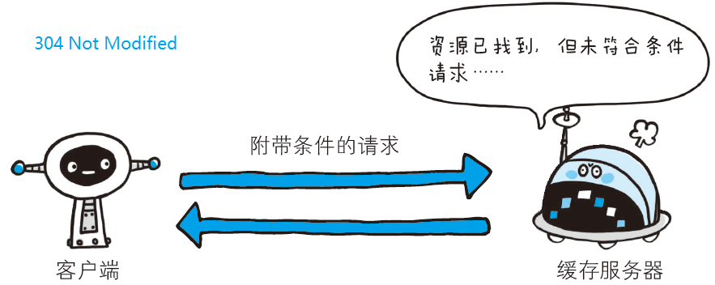

HTTP状态码负责标示客户端HTTP请求的返回结果、标记服务器端的处理是否正常、通知出现的错误等工作。状态码的职责是当客户端向服务器端发送请求时，描述返回的请求结果。借助状态码，用户可以知道服务器端是正常处理了请求，还是出现了错误。
| Col1 | 类别 | 原因短语 |
|---|---|---|
| 1xx | 临时响应 | 表示临时响应并需要请求者继续执行操作的状态代码。 |
| 2xx | 成功 | 表示成功处理了请求的状态代码。 |
| 3xx | 重定向 | 表示要完成请求，需要进一步操作。 通常，这些状态代码用来重定向。 |
| 4xx | 请求错误 | 这些状态代码表示请求可能出错，妨碍了服务器的处理。 |
| 5xx | 服务器错误 | 这些状态代码表示服务器在尝试处理请求时发生内部错误。 这些错误可能是服务器本身的错误，而不是请求出错。 |
常用的状态码
200 OK :（成功）服务器已成功处理了请求。 通常，这表示服务器提供了请求的网页。
204 No Content：（无内容）服务器成功处理了请求，但没有返回任何内容，一般在只需要从客户端往服务器发送信息，而对客户端不需要发送新信息内容的情况下使用。
206 Partial Content：（部分内容）该状态码表示客户端进行了范围请求，而服务器成功执行了这部分的GET请求。响应报文中包含由Content-Range 指定范围的实体内容。
301 Moved Permanently：（永久移动）请求的网页已永久移动到新位置。 服务器返回此响应（对 GET 或 HEAD请求的响应）时，会自动将请求跳转到新位置。
302 Found：（临时移动）服务器目前从不同位置的网页响应请求，但请求者应继续使用原有位置来进行以后的请求。
304 Not Modified ：（未修改）如果客户端发送了一个带条件的 GET请求且该请求已被允许，而文档的内容（自上次访问以来或者根据请求的条件）并没有改变，则服务器应当返回这个状态码。

400 Bad Request：（错误请求）该状态码表示请求报文中存在语法错误。当错误发生时，需修改请求的内容后再次发送请求。
401 Unauthorized：（未授权）请求要求身份验证。 对于需要登录的网页，服务器可能返回此响应。
403 Forbidden:（禁止） 服务器拒绝请求。
404 Not Found: （未找到）服务器找不到请求的网页。
500 Internal Server Error:（服务器内部错误）服务器遇到错误，无法完成请求。
502 Bad Gateway: （错误网关）作为网关或者代理工作的服务器尝试执行请求时，从上游服务器接收到无效的响应。
504 Gateway Timeout: （网关超时）作为网关或者代理工作的服务器尝试执行请求时，未能及时从上游服务器（URI标识出的服务器，例如HTTP、FTP、LDAP）或者辅助服务器（例如DNS）收到响应。